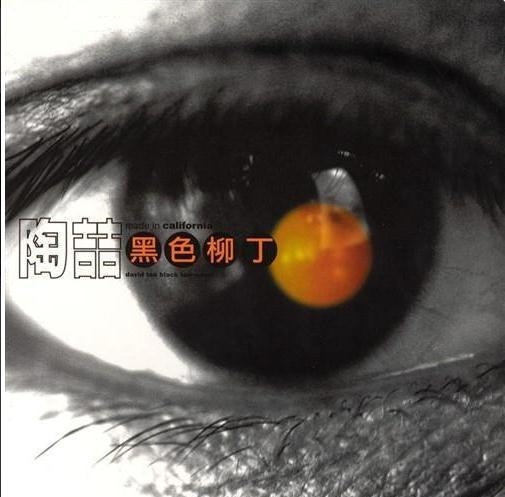

《唯一》
王力宏在飞机上创作的经典情歌，记录了他对爱情的理解和感悟。创作过程仅用了一小时，却成为华语乐坛不朽的经典。
探索经典歌曲背后的创作灵感、故事与心路历程
王力宏
陶喆
方大同
王力宏
陶喆
方大同

| 作词 | 王力宏、陈镇川 |
|---|---|
| 作曲 | 王力宏 |
| 编曲 | 王力宏 |
| 发行时间 | 2004年12月31日 |
| 歌曲时长 | 4分36秒 |
《心中的日月》是王力宏在2004年发行的同名专辑的主打歌，也是他开创"Chinked-out"（华人嘻哈）风格的代表作之一。这首歌的创作灵感来源于王力宏的一次西藏之旅。
王力宏在西藏采风期间，收集了大量藏族民间音乐素材，包括藏族民歌、宗教音乐和传统乐器演奏。回到录音室后，他开始尝试将西方R&B与藏族音乐元素融合：
使用了扎木聂（藏族六弦琴）、铜钦（藏族长号）等传统乐器，与电子合成器音色形成对比。
将藏族舞蹈节奏与嘻哈节奏结合，创造出独特的"藏式嘻哈"节奏型。
《心中的日月》不仅是王力宏音乐生涯的里程碑，也对华语流行音乐产生了深远影响：
《心中的日月》的音乐录影带是在西藏实景拍摄的，王力宏亲自参与了导演工作。拍摄期间遇到了高原反应等困难，但最终呈现出了震撼的视觉效果。
| 作词 | 娃娃 |
|---|---|
| 作曲 | 陶喆 |
| 编曲 | 陶喆 |
| 发行时间 | 1997年12月6日 |
| 歌曲时长 | 4分30秒 |
| 特殊荣誉 | 金曲奖最佳年度歌曲提名 |
《爱很简单》是陶喆首张个人专辑《David Tao》的主打歌之一，也是华语乐坛最具代表性的R&B情歌之一。这首歌创作于陶喆在美国洛杉矶生活期间，当时他正经历一段深刻的感情。
陶喆在创作这首歌时，刻意追求简洁和直接：
陶喆在录音时采用了"一镜到底"的方式，整首歌的演唱一气呵成，保留了情感的真实性。
开头的钢琴前奏成为经典，简单的和弦进行却营造出深情氛围，影响了后来无数情歌创作。
《爱很简单》在华语流行音乐史上具有重要地位：
《爱很简单》最初是陶喆用英语创作的，原名为"I Love You"。后来为了适应华语市场，才请娃娃填了中文词。陶喆后来也发行了英文版本，但中文版的影响力远大于英文版。
| 作词 | 崔惟楷 |
|---|---|
| 作曲 | 方大同 |
| 编曲 | 方大同 |
| 发行时间 | 2008年12月19日 |
| 歌曲时长 | 4分15秒 |
| 特殊荣誉 | 香港电台十大中文金曲奖 |
《三人游》是方大同第三张专辑《橙月》的主打歌，也是他最具代表性的作品之一。这首歌创作于方大同音乐风格的成熟期，展现了他对灵魂乐和R&B的深刻理解。
方大同在创作这首歌时，尝试将复杂的和声与简洁的旋律结合：
使用了大量延伸和弦和替代和弦，展现了方大同深厚的爵士和声功底。
方大同亲自演奏的吉他部分简洁而富有情感，与歌曲主题完美契合。
《三人游》之所以能够打动无数听众，在于它深刻的情感表达：
《三人游》的创作灵感部分来源于方大同看过的一部法国电影，电影中复杂的三角关系给了他创作灵感。他在采访中曾说，这首歌想表达的是"爱情中的无奈与坚持"。

| 作词 | 王力宏 |
|---|---|
| 作曲 | 王力宏 |
| 编曲 | 王力宏 |
| 发行时间 | 2001年9月27日 |
| 歌曲时长 | 4分28秒 |
| 奖项 | 全球华语榜中榜最受欢迎歌曲 |
《唯一》是王力宏音乐生涯中最重要的作品之一，创作于2001年。这首歌的诞生有一个传奇般的故事——它是在一架飞往洛杉矶的航班上创作完成的，从构思到完成仅用了不到一小时。
这首传奇歌曲的创作过程充满了戏剧性：
以钢琴为主要伴奏乐器，简单的和弦进行却营造出深情氛围，开头的钢琴前奏成为经典。
王力宏在这首歌中展现了出色的真假音转换技巧，特别是在副歌部分的情感爆发。
《唯一》不仅是王力宏的代表作，也对华语流行音乐产生了深远影响：
《唯一》在录制时，王力宏坚持要一镜到底地演唱整首歌，以保持情感的连贯性。录音过程中多次因为情感过于投入而中断，最终版本是在第23次尝试中完成的。王力宏后来说："这首歌的情感太强烈了，每次唱到最后都控制不住自己的情绪。"

| 作词 | 陶喆、娃娃 |
|---|---|
| 作曲 | 陶喆 |
| 编曲 | 陶喆 |
| 发行时间 | 2002年8月9日 |
| 歌曲时长 | 4分15秒 |
| 风格 | 摇滚、另类、电子 |
《黑色柳丁》是陶喆在2002年发行的同名专辑的主打歌，也是他音乐生涯中最具争议性和实验性的作品之一。这首歌创作于9·11事件之后，反映了陶喆对世界局势和个人内心的深刻思考。
这首充满实验性的作品创作过程复杂而痛苦：
大量使用工业噪音、失真效果和非常规打击乐音色，营造出压抑而紧张的氛围。
使用大量反馈、啸叫等吉他效果，突破了传统吉他演奏的界限。
《黑色柳丁》之所以成为经典，在于其深刻的主题内涵：
《黑色柳丁》发行初期备受争议，许多听众和评论家认为它"太吵"、"太难听"。然而随着时间的推移，这首歌逐渐被认可为华语乐坛最具实验性和艺术性的作品之一，影响了后来许多另类摇滚和独立音乐人的创作。
| 作词 | 周耀辉 |
|---|---|
| 作曲 | 方大同 |
| 编曲 | 方大同 |
| 发行时间 | 2006年12月29日 |
| 歌曲时长 | 4分12秒 |
| 风格 | 灵魂乐、放克、R&B |
《爱爱爱》是方大同第二张个人专辑的同名主打歌，也是他音乐风格的成熟标志。这首歌创作于方大同对音乐创作有了更深层次理解的时期，体现了他对爱情主题的哲学性思考。
这首充满哲学意味的歌曲创作过程体现了方大同独特的创作理念：
方大同亲自演奏了歌曲中的所有乐器，展现了全面的音乐才能。
《爱爱爱》不仅是一首情歌，更是一首充满哲学思考的作品：
这首歌在音乐上有多项创新：
使用了复杂的复合节奏，将放克的节奏感与灵魂乐的即兴感结合
使用了爵士和声中常见的替代和弦和延伸和弦，丰富了和声色彩
使用了复古的模拟合成器音色，营造出温暖而怀旧的氛围
《爱爱爱》获得了2007年香港电台十大中文金曲奖，被誉为"华语灵魂乐的里程碑之作"。这首歌的成功证明了方大同不仅是一位优秀的歌手，更是一位有着深刻思考的音乐哲学家。
王力宏在飞机上创作的经典情歌，记录了他对爱情的理解和感悟。创作过程仅用了一小时，却成为华语乐坛不朽的经典。
陶喆对社会现实的深刻反思之作，创作于9·11事件之后。歌曲融合了摇滚、电子和R&B元素，展现了陶喆多元化的音乐风格。
方大同对爱情主题的哲学思考，探讨了爱情的不同面向和本质。歌曲融合了灵魂乐、放克和爵士元素，展现了方大同独特的音乐理念。

请选择歌曲